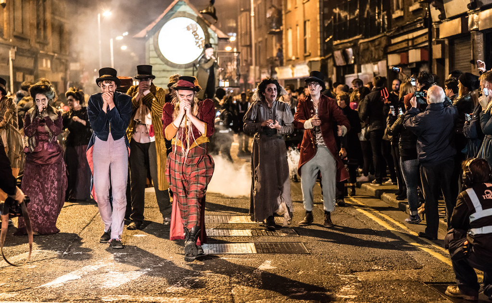
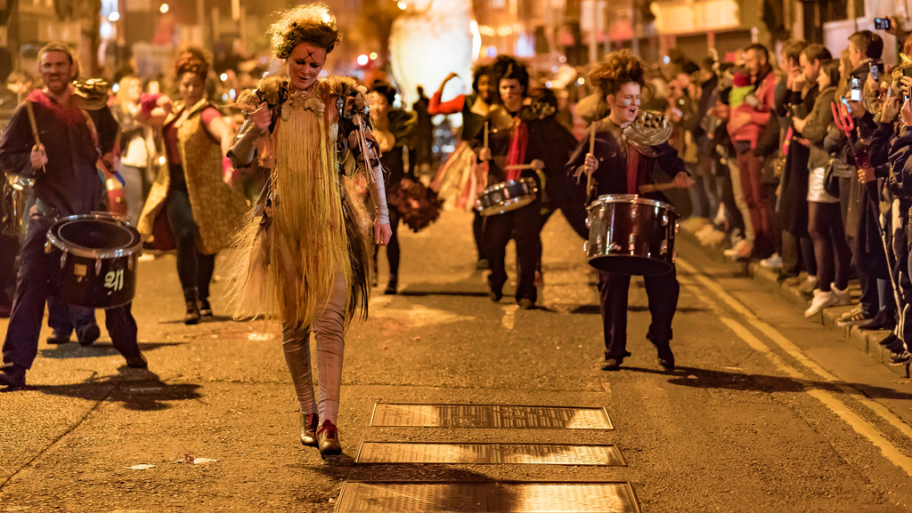

Believed to have begun in Ireland over 2000 years ago when the Celts ruled Ireland and the day marked the end of the summer. Celebrated on the 31st of October it was known as Samhain and the Celts believed that on that night that the dead were able to walk amongst the living. This is where the idea of wearing costumes had originated for Halloween as the Celts would wear a mask or disguise to change their appearance, people even went to lengths of changing their voices. Pumpkins or turnips were used on Halloween originally to ward off evil spirits. They would be left at windows or doorsteps in hopes to protect those in the house and ward off any evil spirit. Communities would come together and light huge fires(bonfires) to ward off the evil spirits and to ward off any bad fortune and the day after the bonfires would be spread over the farmers land to ward off any bad luck in the future. The trick or treating part originated from the poor as they would go from house to house of the rich asking for food or money. The tradition then spread from Ireland to other countries as the Irish emigrated for many reasons e.g. The Famine. Over time Halloween gradually transitioned from superstitious and scary to a more enjoyable night with games.
 
The Gaelic Athletic Association (GAA) is a sporting organisation in Ireland. In it you can play either football(not like American football), hurling, handball, or rounders. Football and hurling are unique to any other sport played in the world and is very popular in Ireland. It is Irelands largest sporting organisation and is played at an amateur level. Founded on November 1st in 1884 and ever since has been thriving in Ireland. While not as popular in other countries there are clubs(400) all around the world teaching people this Irish sport. There are levels in the GAA with the highest being at county level in which different counties from Ireland will play each other attracting many spectators and even being broadcasted on the TV at senior level. In GAA there are different age groups so to keep it fair, senior is the last age group in which any age can play should they be good enough. Teams play each other in a league and championship competitions competing to win in the finals. County teams playing in the championship always attract many spectators and is almost a day out watching the game with people going to the pub to watch or if they had tickets to attend the match at the stadium it would be held in. When two teams make it to the finals(known as the all Ireland finals) of the championship the game is played in the capital Dublin in Croke Park stadium where thousands of spectators watch and all 82,000 tickets are always sold out. Nowadays there are many clubs all over Ireland which compete against each other at club level in the same competitions but separate to the county teams.
Croke park stadium and a GAA game
The Gaeltacht is a place where someone goes to learn/speak/read Irish and improve their Irish. It is usually a two or three-week-long course done in the summertime where many young people can go with their friends. They are a great place to make friends with people of similar age and meet people from all over Ireland. The location is usually in an area where Irish is spoken daily by around 2/3 of the community. In them you have classes where you learn Irish then in the afternoon play, sports and games in Irish and some nights have a ceilidh(pronounced Kay-lee) where traditional Irish music and dance is performed by all. Usually, you would stay in accommodation on the Gaeltacht grounds which is an Irish school normally or in houses around the school. In the house, you would have to speak Irish as well and you would usually be with some other people going to the Gaeltacht. The house would give you your meals and a place to sleep and the rest of your time would be spent at the school. Gaeltacht was officially recognised by the government in the 1920s as a plan to try to revive the Irish language. Reports were showing it being spoken less and less in places. The main Irish speaking counties of Ireland and where some Gaeltacht are located are:
The green is parts of Ireand where Gaeltachts can be located